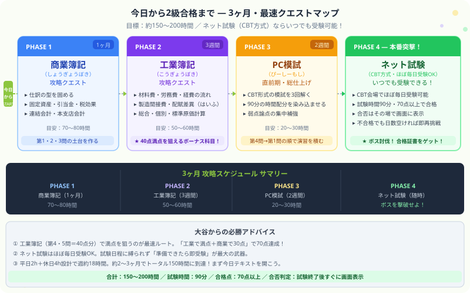

日商簿記2級 | 公開：2026年6月30日 | 更新：2026年6月30日
日商簿記2級の試験日程と最速3ヶ月合格ロードマップ【ネット試験フル活用版】
著者：大谷 一輝（大阪経済大学3回生・日商簿記1級勉強中）
大
著者・大谷からひとこと
こんにちは、大谷です！
3級に合格して「よし、次は2級の試験日に向けてがんばるぞ！」と意気込んだものの、テキストの厚さを見て「うわっ、なんじゃこりゃ……覚える量が3級の3倍以上あるじゃん！次の試験日に間に合うの！？」とフリーズしていませんか？（お気持ち、めちゃくちゃ分かります笑）。
でも安心してください。今の時代はいつでも受けられる【ネット試験（CBT方式）】がメイン。自分のペースに合わせていつでも受験可能です。
今回は、今この瞬間から最短・確実に2級のボスを撃破するための「最速3ヶ月動き方プラン」を優しくナビゲートします。
また、モチベ維持のために、記事の末尾にある【いいねボタン】もポチッと押してもらえると、めちゃくちゃ嬉しいです！
先に結論：2級合格の最速ルートは「商業簿記1ヶ月 → 工業簿記3週間 → PC模試2週間 → ネット試験で本番突撃」の4フェーズです。ネット試験（CBT方式）はほぼ毎日受験できるため、3ヶ月後のどこかで受ければOK。試験日に縛られないのが最大の武器です。
3ヶ月で2級ボスを倒すクエストマップ

図：PHASE1 商業簿記（1ヶ月）→ PHASE2 工業簿記（3週間）→ PHASE3 PC模試（2週間）→ PHASE4 ネット試験本番 の攻略ロードマップ
クエストマップの全体像は上の図の通りです。4つのフェーズを順番にクリアしていくだけ。各フェーズの詳細は後半で解説しますが、まずは今の2級試験の仕組みを正確に理解しておきましょう。
2026〜2027年版 日商簿記2級の最新試験概要
① ネット試験（CBT方式）：2級受験のメインルート
日商簿記2級のネット試験（Computer Based Testing：コンピューター方式）は、全国各地にあるCBT試験センターで受験できる形式です。2020年12月から始まり、今では多くの受験生が活用しています。
| 項目 | 内容 |
|---|
| 受験方法 | 全国のCBT試験センターにて受験（申込はCBT-Solutions経由） |
| 受験可能日 | 試験センターが指定する日程でほぼ毎日受験可能（年末年始・保守期間を除く） |
| 試験時間 | 90分 |
| 合格基準 | 70点以上（満点100点） |
| 結果発表 | 試験終了後すぐに画面に合否が表示される |
| 再受験 | 不合格の場合、所定の日数が経過すれば再受験可能 |
| 合格証書 | 後日、商工会議所から発行。紙の統一試験の合格証書と同等の効力 |
| 持ち込み可 | 電卓（関数電卓・スマホ電卓不可） |
ネット試験の最大のメリット：「準備できたら受ける」ができる！
統一試験（紙の試験）は年3回しか受験機会がありませんが、ネット試験は「準備が整った瞬間に申し込んで翌週受ける」ことができます。3ヶ月計画で進めていて「PHASE3が終わったから受験しよう」という柔軟な動き方が可能です。
② 統一試験（紙の試験）：年3回のサブ選択肢
ネット試験と並行して、従来からある紙の統一試験（筆記試験）も継続して実施されています。ネット試験が苦手な方や、紙の方が実力を出しやすいと感じる方はこちらを選択肢に入れてください。統一試験の合否は後日発表です。
| 回次 | 試験日（予定） | 申込期間の目安 |
|---|
| 第169回 | 2026年11月15日（日） | 2026年9月〜10月ごろ |
| 第170回 | 2027年2月（日付は後日発表） | 2026年12月〜2027年1月ごろ |
| 第171回 | 2027年6月（日付は後日発表） | 2027年4月〜5月ごろ |
⚠ 統一試験の日程は商工会議所ごとに異なります。上の日程は全国一般的なスケジュールの目安です。正確な申込期間・受験料・会場は、お住まいの地域の商工会議所の公式サイトで必ず確認してください。
最速3ヶ月攻略プラン：4フェーズの動き方
ネット試験を活用すれば、「今日から3ヶ月後のいつか」を本番の目安にして計画を立てられます。1日平均2〜3時間を確保できれば、合計150〜200時間のクリアは十分可能です。各フェーズを順番にクリアしていきましょう。
PHASE 1 ／ 1ヶ月
商業簿記（しょうぎょうぼき）の攻略
目安：70〜80時間 ／ 第1・2・3問（計60点前後）の土台を作る
商業簿記は3級の延長ですが、カバー範囲が大幅に広がっています。最初は全体像を掴むことだけ意識して、以下の順番で論点を攻略していきましょう。
商品売買・仕訳の型を固める（1〜2週目）
棚卸資産の評価（先入先出法・移動平均法）や、売上原価の算定方法を復習しながら、2級固有の仕訳パターンに慣れていきます。3級で学んだ仕訳の感覚がそのまま活きます。
固定資産・引当金・税効果・その他（2〜3週目）
リース（りーす）取引・ファイナンスリースの仕訳、貸倒引当金（かしだおれひきあてきん）・退職給付引当金の計算、税効果会計（ぜいこうかかいけい）の基本など、2級ならではの論点を押さえます。
連結会計・本支店会計（3〜4週目）
多くの受験生が「うわっ、なんじゃこりゃ！」となる連結会計（れんけつかいけい）は、まず「開始仕訳 → 投資と資本の相殺 → 内部取引の消去」という3ステップの流れを覚えるだけで7割の問題に対応できます。完璧を目指さず、部分点を積む意識で進めましょう。
PHASE 2 ／ 3週間
工業簿記（こうぎょうぼき）の攻略 ― 2級合格の真の決め手
目安：50〜60時間 ／ 第4・5問（計40点）で満点を目指す
多くの独学者が後回しにしがちな工業簿記ですが、実はここが最速合格のカギを握っています。詳しくは次のセクションで解説しますが、「材料費 → 労務費 → 経費 → 製造間接費（せいぞうかんせつひ）→ 仕掛品（しかかりひん）→ 製品 → 売上原価」という原価の流れを1本のルートとして追いかけることが攻略の核心です。
- 材料費・労務費・経費（ざいりょうひ・ろうむひ・けいひ）の分類と計算
- 製造間接費（せいぞうかんせつひ）の配賦（はいふ）と配賦差異（はいふさい）
- 個別原価計算・総合原価計算（こべつ・そうごうげんかけいさん）
- 標準原価計算・差異分析（ひょうじゅんげんかけいさん・さいぶんせき）
- CVP分析・損益分岐点（CVPぶんせき・そんえきぶんきてん）
PHASE 3 ／ 2週間
PC模試（ぴーしーもし）で直前期の総仕上げ
目安：20〜30時間 ／ 時間配分と弱点の最終確認
テキストと問題集が一通り終わったら、CBT形式の模試（もし）を最低3回解きましょう。PC画面での解答に慣れることと、「第4問 → 第1問 → 第5問 → 第2問 → 第3問」という推奨解答順を体に染み込ませることが目標です。
- 模試の結果で60点台が出るようなら、工業簿記の弱い論点を1点集中で補強する
- 計算用紙（白紙）の使い方を工夫しておく（CBTでは問題用紙に書き込めない）
- 桁ミス・科目名のタイポに注意。見直し時間を最後の5分に確保する習慣をつける
PHASE 4 ／ いつでも受験OK
ネット試験・本番突撃！ ボスを撃破せよ
90分・70点以上・その場で合否判定
PHASE3の模試で70点前後が安定して出るようになったら、CBT-Solutionsのサイトから受験日と会場を予約して本番に臨みましょう。試験は90分で全5問。解き終わった瞬間に画面に合否が表示されます。「合格」の2文字を見た瞬間の喜びを、ぜひ体験してください！
万が一不合格でもすぐに再挑戦できるのがネット試験の強みです。紙の統一試験のように「次は3ヶ月後……」と待たされることがないため、メンタルダメージが少なく済みます。
2級最速合格の裏ルート：工業簿記で40点満点を狙え
大谷が確信する「工業簿記ファースト」戦略
2級の試験は商業簿記60点＋工業簿記40点の計100点構成です。ここで覚えておいてほしいのが、工業簿記（第4・5問）の方が攻略しやすいという事実です。
商業簿記は論点が幅広く、連結会計や本支店会計など難易度の高い問題が出ると得点しにくい場面があります。一方、工業簿記は「材料から製品への原価の流れ」というたった1本のルートさえ覚えれば、型（テンプレート）に当てはめるだけで解けてしまう問題が多いんです。
つまり、「工業簿記で満点（40点）＋商業簿記で30点」＝合計70点で合格というルートが現実的に狙えます。商業簿記が難化した回でも、工業簿記の40点が盤石であれば合格ラインに届くわけです。これが大谷の言う「最速合格の裏ルート」です。
工業簿記の具体的な演習方法は、以下の記事で論点ごとに詳しく解説しています。
⚡
工業簿記 演習ロードマップ
簿記2級 工業簿記の演習ロードマップ｜材料費からCVPまでの解き方
材料費・労務費・経費・製造間接費・個別原価計算・総合原価計算・標準原価計算・CVP分析を順番に攻略するロードマップ。工業簿記で満点を狙う人はここからスタート。
よくある質問 Q&A
Q. 3級を取ってからどれくらいで2級に進むべきですか？
仕訳の感覚が残っているうちに、なるべく間を空けずに進むことをおすすめします。3級合格後1〜2ヶ月以内に2級の学習をスタートさせると、3級で覚えた仕訳の型がそのまま土台になります。期間が空きすぎると仕訳感覚がリセットされてしまうため、鉄は熱いうちに打ちましょう。
Q. ネット試験と紙の統一試験、どちらを選ぶべきですか？
迷うならネット試験を選ぶのがおすすめです。いつでも受験できる柔軟性が最大のメリットで、「勉強が仕上がった！」と感じたタイミングですぐに申し込めます。紙の試験が得意な方・PC操作が不安な方は統一試験も選択肢に入れてください。なお、どちらで合格しても合格証書の効力は同じです。
Q. 工業簿記は商業簿記の後からやるべきですか？
本記事のロードマップでは商業簿記→工業簿記の順を推奨していますが、実は工業簿記から先に手をつけるのも有効な戦略です。工業簿記は商業簿記の知識をほとんど必要とせず独立した科目なので、最初に工業簿記の全体像を掴んでおくと後半がスムーズになります。どちらが合うかは人によるため、まずテキストをパラパラ眺めて「取り組みやすそうな方」から始めてみてください。
Q. 3ヶ月で間に合わない場合はどうすればいいですか？
ネット試験の強みは「自分のペースで受験日を設定できる」ことです。3ヶ月で仕上がらなければ、もう1ヶ月延ばして4ヶ月計画にするだけ。紙の試験のように「次は3ヶ月後……」と焦る必要がありません。PHASE3の模試で60点を切る状態で本番に臨むのは得策ではないため、PHASE3が完了してから本番の予約を入れることをおすすめします。
次のクエストに進もう
合格に向けた各論点の詳細解説記事へのリンクです。気になる論点から優先的に読んでください。
⚡
工業簿記 演習ロードマップ
工業簿記の演習ロードマップ（材料費→CVP分析まで）
工業簿記で満点を目指すロードマップ。各論点の解説記事へのリンク付き。
📋
商業簿記
銀行勘定調整表（ぎんこうかんじょうちょうせいひょう）の書き方
第2問でよく出る銀行勘定調整表の4つの不一致原因と修正仕訳を完全解説。
🖥
ネット試験 対策
ネット試験の問題構成・時間配分と「解く順番」を完全解説
90分で70点をもぎ取るための解答順と白紙ハック術。本番直前に必読。
⚔
簿記2級 総合ガイド
簿記2級の勉強時間・独学合格ロードマップ
2級全体の勉強法・おすすめテキスト・合格率のデータをまとめた総合ガイド。
スタディクエストで学習進捗を管理しよう
今日の勉強時間・クリアした論点・ボス討伐数をRPG感覚で記録。学習継続のモチベーションをキープ！
無料で始める →